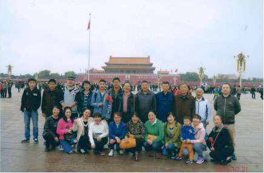

来源：鑫远水务 添加时间：2015-10-22
为了提高团队协作能力，进一步增强班组员工之间的沟通和交流，拓宽视野，激发工作积极性，2015年10月，开福污水处理厂分两批组织员工前往北京开展户外团队活动。
在紧张的行程安排中，大家参观了天安门广场、故宫、颐和园、天坛、八达岭长城，在历史的长河里体会古色古香的厚重。沧桑的岁月在故宫的雕栏画栋里；在颐和园的长廊尽头；在长城被磨光的石砖下。游览了奥林匹克公园、王府井商业街，呼吸着这座古老城市中新鲜的空气。感受时代的碰撞和历史的跃进。每一座城市都有它的魅力。在短短的三天行程里。我们靠近这座城市、了解这座城市。欣赏、惊叹、记录，带走一段关于北京的美丽旅程的记忆。
从长沙到北京，从南方到北方，干燥的气候，冷冽的北风，十几个小时的车程，我们一行人就从夏末穿越到了初冬。站在长城的烽火台下。目光所及是起伏的群山，其间点缀着深深浅浅的红和黄。好一幅壮丽的北国秋色!感叹大自然造化精奇的同时也醉心于山河的壮丽。
北京之行，不仅让大家开阔了视野，活跃了团队气氛，同时也让员工陶冶情操、激发热爱生活、热爱岗位的工作热情。
